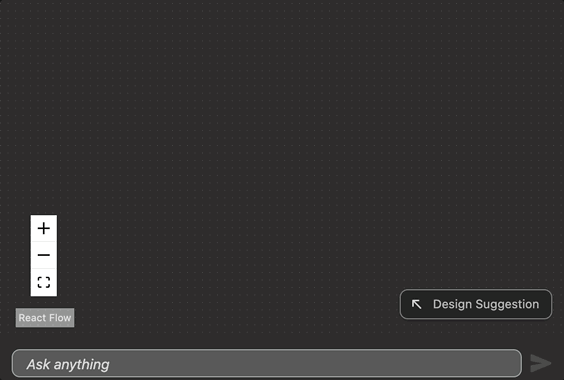
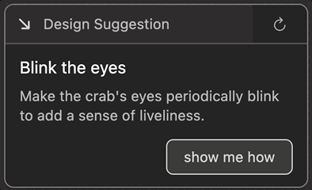

Design Suggestions for Flowcode
Flowcode is a creative-coding environment that helps beginners understand and modify their code. I designed and built an AI-assisted feature that suggests one possible next step based on a user’s project, without modifying the code for them; it was evaluated with 11 K–8 educators.
- Type
- HCI research
Design Tools Lab, Barnard - Role
- Designed and implemented the feature end to end
- Team
- Grace Cai · Tiffany Tseng (advisor)
- Stack
- React · LLM prompt design · Figma
- Evaluation
- 3-hour workshop, K‑8 STEM educators (N = 11)

Beginners can finish a working animation and still need help deciding what to try next. Flowcode combines HTML, CSS, and JavaScript editors with a live preview, a flowchart, and an explanation chat.
Interface iterations
I reviewed research on novice programming and proactive AI assistance, then explored placement and interaction in sketches, Figma mockups, and prototypes.
Implementation
I implemented the feature in React with a custom, code-aware LLM prompt pipeline. It generates one achievable next step in plain language, referring to elements in the learner’s current code, such as #back-fin or #cloud.
The widget opens on request and shows one suggestion at a time. Learners can regenerate it or choose “Show me how” to pass it to the explanation chat for guidance. The feature does not write or apply code automatically; learners make the changes manually.

Design Suggestions was my contribution to a summer research poster with Grace Cai, advised by Tiffany Tseng in Barnard’s Design Tools Lab and Department of Computer Science. Grace designed and built the companion Code-to-Preview Highlighting feature.
Evaluation
In a three-hour workshop, 11 K–8 STEM educators used Flowcode and built working animations. All 11 survey respondents agreed or strongly agreed that they remained in control of their creative decisions.
I remained in control of the creative decisions I made while using the feature.
The suggestions felt relevant to the project and my current code.
The feature helped me think of ideas I would not have come up with on my own.
The suggestions felt repetitive. (reverse-scored)
Post-workshop survey, N = 11 per item. Percentages rounded; repetition is reverse-scored.
About one-quarter (27%) reported repetitive suggestions. The feature did not track previously shown ideas; adding suggestion history is a clear next improvement. Participants also needed help phrasing prompts, suggesting a need for more prompting guidance.
This small workshop provides feedback on educators’ experience of the feature. It does not establish learning outcomes or how K–8 students would use it.